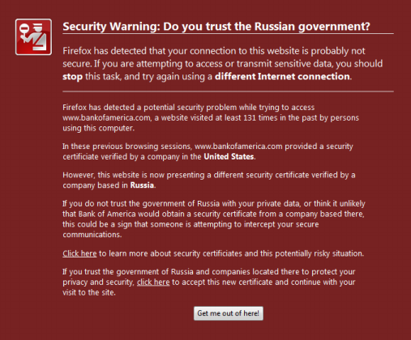

Should You Trust Your SSL Certificate?
Is your SSL secure? I’m not sure that the answer is quite so binary after reading the paper Certified Lies: Detecting and Defeating Government Interception Attacks Against SSL by Christopher Soghoian and Side Stamm. In a so-called compelled certificate creation attack, a government agency forces a CA to issue a fake certificate to intercept an SSL-encrypted (or more precisly: TLS-encrypted) session without triggering a warning in the victim’s browser. This works seamlessly, because it does not matter who issued a specific certificate as long as the browser sees a valid chain of trust terminated with a known root certificate. Although the authors claim that this attack is exercised in practice, data-driven evidence is yet lacking.
Proactive Protection
In order to assess whether or not one’s current TLS session is being intercepted, the authors have developed a Firefox extension called CertLock, which extends the browser history by collecting additional certificate information such as its hash, the name and country of the issuing CA and the website, and the trust chain up to the root CA. Each time the user revisits a TLS-protected site for which a certificate in the history exists, CertLock compares their two hash values. If a mismatch is detected, CertLock next compares the issuing CAs’ country. In the event that they differ, CertLock presents a warning to the user; otherwise the page loads without any warnings.
Although CertLock alleviates some problems with the compelled certificate creation attack, it is still limited in the following ways.
Trust-On-First-Use
When visiting a TLS-protected website for the first time, the user immediately faces a dilemma: how to trust the certificate chain when there is nothing to compare to. Because CertLock operates by comparing the current certificate with one from the history, it cannot detect if the first encountered certificate chain is authentic. That is, CertLock can only protect the user for sites that have already been visited in the past and deemed secure.
When planning a trip to a potentially hostile environment (e.g., DEF CON or China), a common recommendation is to use a fresh laptop, or at least to replace the laptop’s harddrive and start over with a fresh system installation. This is precisly the scenario where CertLock would be necessary, but cannot function due to the lack of browsing history.
Ground Truth
A well-known issue with anomaly detection is the presence of an adversary during the training phase, who can later conduct unnoticed attacks when the system is in live operation. CertLock cannot distinguish counterfeit from real certificate trust chains when trained maliciously. In fact, the opposite of the intended behavior may occur: a benign certificate may be misclassified as untrustworthy, and a forged certificate may be blindly accepted. This problem highlights the need for a trustworthy past certificate history, otherwise it is impossible to make an accurate decision.
False Negatives
CertLock suffers from false negatives when (i) the actual and compelled CAs are from the same country and (ii) the certificate differs from the one in the history but the issuing CA has not changed. At the same time, the number of false positives is greatly reduced this way, which is vital to get the user’s attention in this scenario.
User Failure
When I asked two of my friends what their impression was of CertLock’s displayed warning, I was surprised to hear “it looks like spam - what does Russia have to do with the site I am visiting?”

Granted, the authors acknowledge the room for improvement on the user interface, and their intention to brush up the warning’s design. However, given the population’s limited geographic understanding of international relations, this may be a challenging task.
Retrospective Analysis
In addition to the aspects above which highlight the need for better proactive defenses, opportunities for forensic analysis are equally important to appreciate. Network traffic traces may contain evidence of the compelled certificate creation attack. Bro already supports extraction of certificates which minimizes the programmatic efforts required to implement a detector. To address the problem of ground truth, the traces should ideally span long time frames and be recorded from multiple vantage points. In the future, I plan to write a Bro script to detect this type of TLS tampering, which could be particularly useful to unveil targeted attacks, as these tend to live under the radar of the standard network intrusion detection system.
Update (March 3, 2011): It is great to see some momentum in the community regarding this topic. Erik Hjelmvik blogs about the forensic analysis of TLS certificates to detect man-in-the-middle attacks. To extract certifcate files, he suggests NetworkMiner, a GUI tool for Windows.
Well, Bro’s TLS analyzer also provides this basic extraction functionality, yet more beyond that. For example, here’s a subset of events the TLS analyzer generates:
ssl_conn_weak(name: string, c: connection);
ssl_certificate_seen(c: connection, is_server: bool);
ssl_certificate(c: connection, cert: X509, is_server: bool);
ssl_conn_attempt(c: connection, version: count, ciphers: cipher_suites_list);
ssl_conn_server_reply(c: connection, version: count, ciphers: cipher_suites_list);
ssl_conn_established(c: connection, version: count, cipher_suite: count);
process_X509_extensions(c: connection, ex: X509_extension);
ssl_session_insertion(c: connection, id: SSL_sessionID);
ssl_conn_reused(c: connection, session_id: SSL_sessionID);
ssl_X509_error(c: connection, err: int, err_string: string);
Each time Bro raises one of these events, user-defined handler code executes. This allows for a very fine-grained analysis of TLS traffic and certificates. Such a high-level abstraction of activity exists for a numerous network protocols, which makes Bro “the Python/Ruby” for traffic analysis. That said, there are plenty of domain-specific primitives available in Bro to effectively write a detector for the compelled certificate attack.
Load Comments